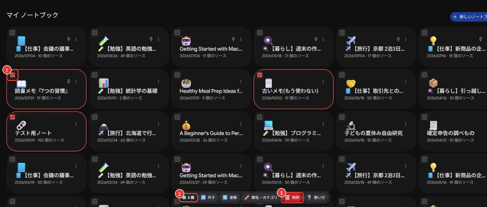
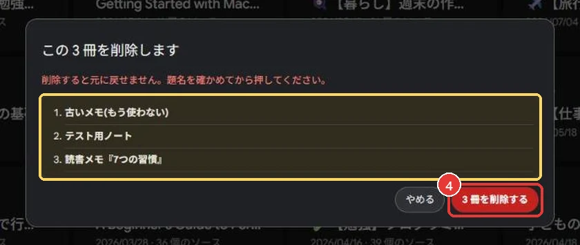
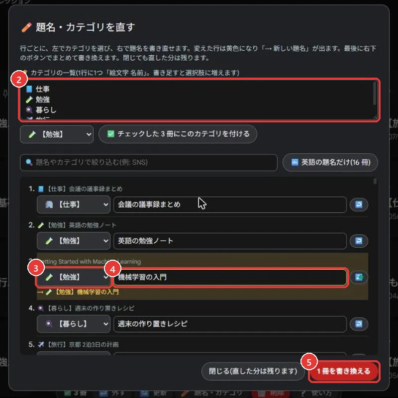
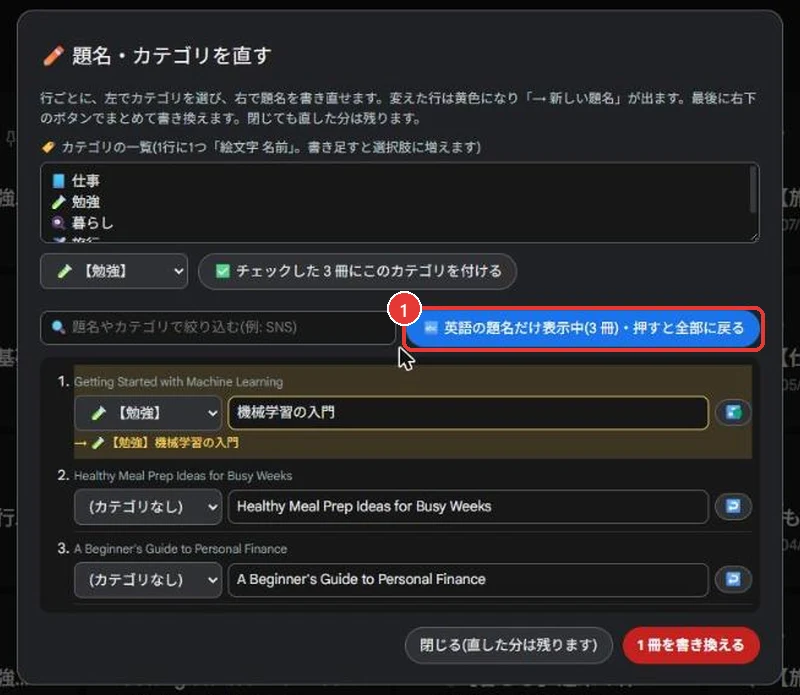
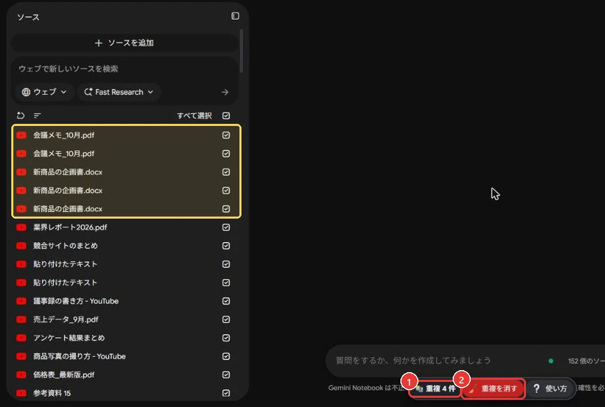
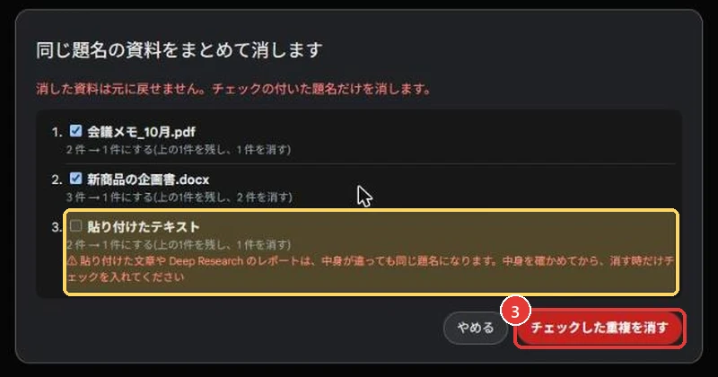

始める前に
この3つがそろっていれば使えます。
- パソコンの Chrome で Gemini Notebook を開いている
- 画面が日本語で表示されている
- 開いていたページは一度読み込み直した(F5 キー)
日本語以外の表示では動きません。その時は下のバーに「⚠ 日本語表示で使ってください」と出ます。
赤枠＝押す場所黄色の枠＝確かめるところ123＝押す順番
🗑️ まとめて削除
チェック → 削除 → 題名を確かめて押す。

- 1消したいノートのチェック欄を押す選んだノートは赤く囲まれます。一覧表示(表)でも同じです。
- 2選んだ数を確かめる
- 3赤い「🗑️ 削除」を押す
- 4黄色の枠の題名を読んでから、赤いボタンを押す
消したノートは戻せません。

✏️ 題名とカテゴリ
全部のノートを1つの画面で直せます。
📘【仕事】会議の議事録まとめ← 前の【】がカテゴリ、後ろが題名
- 1下のバーの「✏️ 題名・カテゴリ」を押す
- 2使うカテゴリを1行に1つ書く
- 3ノートごとにカテゴリを選ぶ
- 4題名を書き直す変えた行は黄色になります。
- 5「〇 冊を書き換える」を押す
「閉じる」でも直した分は残ります。書き換わるのは 5 を押した時だけです。

🔤 英語の題名だけ出す
- 1「🔤 英語の題名だけ」を押す
作ったままで英語の題名が付いているノートだけが並びます。もう一度押すと全部に戻ります。
チェックしたノートに同じカテゴリをまとめて付けるボタンもあります(カテゴリの一覧のすぐ下)。

🧹 重複した資料
ノートを開くと、下のバーに重複の数が出ます。
- 1重複の数を見る黄色の枠のように、同じ題名が並んでいる数です。
- 2「🧹 重複を消す」を押す

- 3チェックを確かめて、赤いボタンを押すいちばん上の1件を残して消します。
黄色の行(貼り付けた文章・Deep Research)は、中身が違っても同じ題名になるので最初はチェックが外れています。

ボタンの意味
ボタンにマウスを重ねると説明が出ます。

| ↩️ 外す | チェックを全部外す |
|---|---|
| 🔄 更新 | 一覧を読み込み直す |
| ❔ 使い方 | このページを開く(Chrome 右上の拡張アイコンでも開けます) |
| 右下の 🙈 / 📒 | チェック欄とバーを隠す / 出す |
困ったとき
チェック欄やバーが出ない
F5 キーで読み込み直します。右下が 📒 なら、押すと出ます。
「⚠ 日本語表示で使ってください」と出る
Google アカウントの言語を日本語にして、読み込み直します。
「失敗」と出た
途中で一覧の並びが変わると、違うノートを消さないように止まります。「🔄 更新」の後にもう一度押します。
おすすめのノートにチェック欄が無い
他の人のノートは消せないので、自分のノートだけに付けています。
データの扱い
- 外部には何も送りません(通信しません)
- ノートの中身や題名を集めません
- Chrome の中に残すのは、カテゴリの一覧・書き換えの予定・表示のオン/オフだけ
外し方
Chrome 右上のパズルのボタン → 「ノートまとめて整理」の ︙ → 「Chrome から削除」。ノートはそのまま残ります。